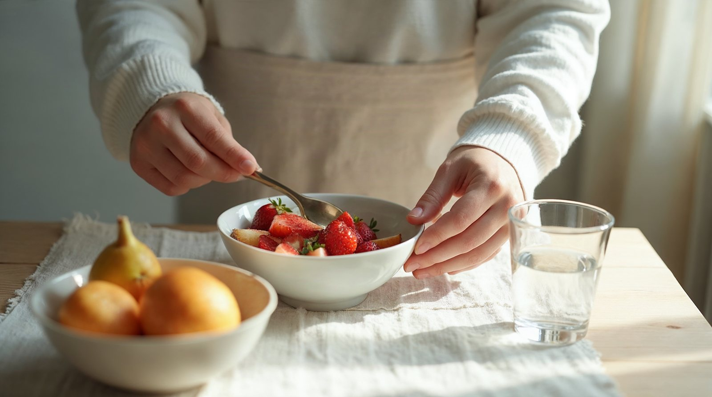
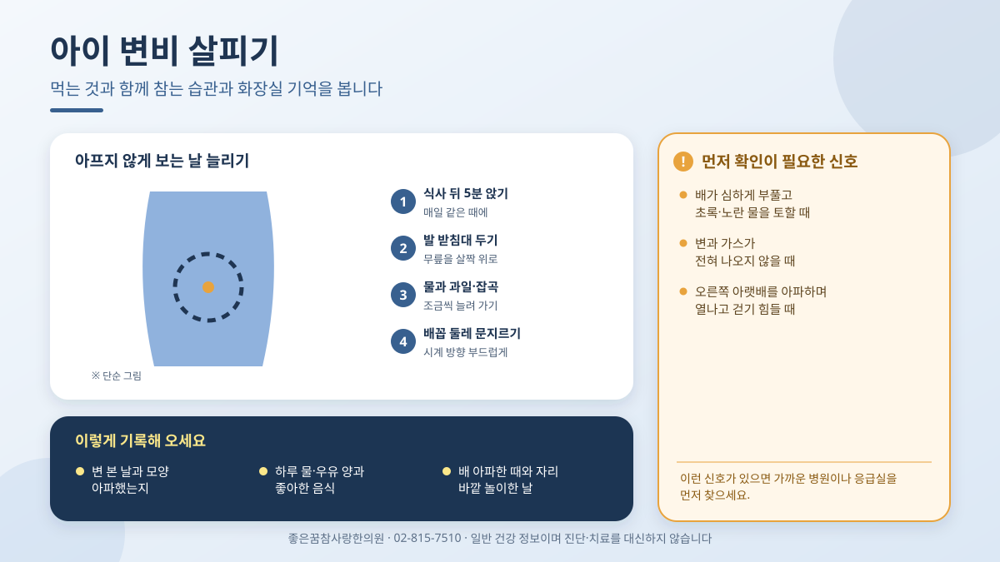

이종호 한의사 감수좋은꿈참사랑한의원 대표원장 (한의사 면허번호 19769)발행 2026-11-26 · 수정 2026-11-26
이 글의 차례
아이가 화장실 앞에서 다리를 꼬고 서 있습니다. 배가 아프다면서도 변기에는 앉지 않겠다고 고개를 젓습니다. 지난번에 딱딱한 변을 보다가 너무 아팠던 기억 때문이지요. 결국 소파 뒤에 숨어 얼굴이 빨개지도록 힘을 주며 참습니다.
진료실에서 변비 아이를 둔 부모님을 만나면, 아이보다 부모님이 더 지쳐 계신 경우가 많습니다. 사흘째 변을 못 봤다고, 관장을 해야 하나 고민된다고, 아이가 변기만 보면 운다고 말씀하십니다. 그 마음이 어떤지 충분히 짐작이 됩니다.
아이 변비는 단순히 먹는 것만의 문제가 아닙니다. 아팠던 기억 때문에 참게 되고, 참으면 변이 더 굳고, 굳은 변은 또 아프게 나오는 고리가 생기기 쉽습니다. 그래서 몸과 마음을 함께 다독여야 풀리는 경우가 많습니다.
저는 변비 상담을 할 때 무엇을 먹는지만큼 화장실에서 어떤 일이 있었는지를 꼭 여쭙니다. 배변 훈련을 시작한 시기, 어린이집이나 학교에 다니기 시작한 시기, 이사나 동생이 태어난 일처럼 생활이 바뀐 때와 변비가 시작된 때가 겹치는 경우가 적지 않기 때문입니다.
아이 변비는 어떻게 알아보나요?
어른처럼 하루 한 번이 기준은 아닙니다. 아이마다 리듬이 달라서 이틀에 한 번 보더라도 변이 부드럽고 아파하지 않으면 크게 걱정하지 않으셔도 됩니다. 반대로 매일 보더라도 토끼 똥처럼 작고 딱딱하거나, 볼 때마다 울고 피가 묻는다면 변비로 보고 살펴야 합니다.
아이 변비를 알아차리는 단서는 생각보다 다양합니다. 변을 볼 때 한참 힘을 주는지, 변기 대신 구석에 숨어서 다리를 꼬는지, 속옷에 변이 조금씩 묻어 나오는지, 배가 자주 아프다고 하는지, 입맛이 줄었는지를 함께 보세요.
속옷에 묽은 변이 묻어 나오면 설사로 오해하기 쉬운데, 사실은 장 안에 굳은 변이 막혀 있고 그 옆으로 묽은 변이 새어 나오는 경우가 있습니다. 아이가 일부러 그러는 것이 아니니 혼내지 않으시는 것이 중요합니다.
왜 아이는 변을 참게 될까요
가장 흔한 이유는 아팠던 기억입니다. 딱딱한 변을 보다가 항문이 찢어지거나 크게 아팠던 아이는 다음에 변의가 와도 몸을 꼭 조이며 참습니다. 참는 동안 장은 변에서 물기를 계속 빨아들여, 다음 변은 더 단단하고 커집니다.
생활이 바뀌는 시기도 변을 참게 만듭니다. 어린이집이나 학교 화장실이 낯설고 춥거나, 친구들 앞에서 화장실 가는 것이 부끄럽거나, 놀이에 빠져 신호를 미루다 보면 변의를 느끼는 감각 자체가 무뎌지기도 합니다.
배변 훈련을 서두른 경우도 있습니다. 아직 준비되지 않은 아이에게 변기에 앉기를 재촉하면 변을 보는 일이 긴장되는 일로 기억될 수 있습니다. 부모님 잘못이라기보다 아이마다 준비되는 시기가 다르기 때문입니다.
한의학에서는 장의 움직임과 진액, 그리고 아이의 기운을 함께 봅니다. 열이 많아 입이 마르고 변이 단단하게 굳는 아이, 기운이 약하고 배가 차서 장이 느리게 움직이는 아이, 긴장하면 배가 굳는 아이는 같은 변비라도 살피는 방향이 조금 다릅니다.

먹는 것과 물은 어떻게 영향을 주나요?
흰 빵, 과자, 우유처럼 부드럽고 섬유질이 적은 음식 위주로 먹으면 변의 부피가 줄고 장이 느리게 움직입니다. 특히 우유를 하루에 많이 마시는 아이는 밥을 덜 먹게 되어 변이 굳기 쉬우니, 하루 양을 한번 살펴보세요.
채소와 과일, 잡곡, 해조류, 콩류는 변의 부피를 늘리고 부드럽게 만듭니다. 다만 아이가 싫어하는 채소를 억지로 먹이면 식탁이 전쟁터가 되기 쉽습니다. 좋아하는 메뉴에 잘게 섞거나, 과일을 간식으로 바꾸는 식으로 작게 시작하시는 편이 오래갑니다.
물은 섬유질과 짝을 이룰 때 도움이 되기 쉽습니다. 섬유질만 늘리고 물이 부족하면 오히려 변이 더 뭉칠 수 있습니다. 아이가 물을 잘 안 마신다면 자기 컵을 정해 주고, 놀이 사이사이 한 모금씩 마시는 습관을 만들어 주세요.
다른 배 불편과 어떻게 다른가요
아이가 배가 아프다고 할 때 변비가 원인인 경우가 꽤 많습니다. 주로 배꼽 주위나 왼쪽 아랫배가 아프고, 변을 보고 나면 한결 편해지는 것이 특징입니다. 반대로 열이 나고 토하거나, 오른쪽 아랫배를 유난히 아파하면 변비와는 다른 이유를 먼저 확인해야 합니다.
긴장하거나 등교 전에만 배가 아프다는 아이도 있습니다. 이런 경우는 장과 마음이 가깝게 연결되어 있어 생기는 불편일 수 있어, 변의 모양과 함께 아이의 하루와 마음 상태도 같이 살펴봅니다.
갓 태어난 아기가 처음부터 변을 잘 못 보거나 배가 계속 불러 있고 잘 자라지 않는 경우, 소변 실수가 갑자기 늘거나 다리 힘이 약해 보이는 경우에는 장이나 신경의 다른 원인이 있을 수 있어 소아청소년과 진료를 먼저 받아 보시길 권합니다.
배변 습관은 어떻게 다시 잡나요?
장은 식사 뒤에 움직임이 활발해집니다. 그래서 아침이나 저녁 식사 뒤 10분쯤 지나 변기에 5분 정도 앉아 보는 시간을 매일 같은 때에 만들어 주세요. 변이 나오지 않아도 괜찮습니다. 앉아 있는 시간 자체가 몸에 신호를 익히는 연습입니다.
발 받침대를 두면 무릎이 엉덩이보다 살짝 올라가 힘주기가 쉬워집니다. 아이 변기 좌석을 얹어 엉덩이가 빠질 것 같은 불안을 줄여 주시는 것도 좋습니다. 앉아 있는 동안 그림책을 보거나 풍선 불기처럼 배에 힘을 주는 놀이를 해 보세요.
변을 본 날에는 결과보다 앉아 본 노력을 칭찬해 주세요. 달력에 스티커를 붙이는 방법도 많이 씁니다. 변을 못 봤다고 실망한 표정을 보이면 아이는 다시 긴장하게 됩니다.
변의 모양은 무엇을 알려 주나요?
변의 모양은 장 안에 변이 얼마나 오래 머물렀는지 알려 주는 단서입니다. 토끼 똥처럼 작고 딱딱한 알갱이는 오래 머물며 물기를 많이 빼앗긴 변이고, 굵고 단단한 소시지 모양은 그보다 조금 덜하지만 여전히 굳은 편입니다.
표면이 매끈하고 부드러운 바나나 모양이 가장 편안한 변에 가깝습니다. 반대로 형태 없이 묽기만 하다면 너무 빨리 지나간 것이지요. 아이와 함께 그림 카드를 만들어 "오늘은 몇 번 모양이었어?" 하고 놀이처럼 물어보면 아이도 자기 몸에 관심을 갖게 되고, 기록도 훨씬 쉬워집니다.
변이 유난히 굵어 변기가 막힐 정도라면 오래 참았다는 신호일 수 있습니다. 이런 변을 본 뒤에는 항문이 아파 다시 참게 되기 쉬우니, 그다음 며칠은 변을 부드럽게 만드는 쪽에 더 신경 써 주세요.
부모님이 지치지 않으려면
변비는 매일 화장실 앞에서 아이와 씨름하는 일이 되기 쉽습니다. 그러다 보면 부모님 목소리가 높아지고, 아이는 화장실을 더 싫어하게 됩니다. 변 이야기를 할 때는 가능한 한 가볍고 담담한 말투를 지켜 주세요.
엄마와 아빠, 할머니처럼 아이를 돌보는 어른이 여럿이라면 앉는 시간과 칭찬 방법을 미리 맞춰 두시는 것이 좋습니다. 사람마다 방법이 다르면 아이는 헷갈리고, 기록도 이어지지 않습니다. 짧은 메모를 냉장고에 붙여 두고 함께 보시면 편합니다.
형제가 있다면 함께 식사 뒤 화장실에 다녀오는 습관을 가족 규칙처럼 만들어도 좋습니다. 혼자만 특별히 챙김을 받는다는 느낌이 줄어 아이가 덜 부담스러워합니다.
약을 쓰고 있을 때 함께 볼 것
소아청소년과에서 변을 부드럽게 하는 약을 처방받는 경우가 많습니다. 이 약은 굳은 변 때문에 아파서 참는 고리를 끊어 주는 역할을 합니다. 변이 좋아졌다고 혼자 끊으면 다시 굳기 쉬우니, 줄이는 시기는 처방한 선생님과 상의해 정하세요.
약을 쓰는 동안에도 앉는 습관과 식사, 물은 그대로 이어 가셔야 합니다. 약이 길을 열어 주는 사이 생활이 그 길을 넓혀 두어야, 약을 줄인 뒤에도 흐름이 이어질 가능성이 커집니다.
먼저 이렇게 여쭙니다
처음 오시면 대략 이런 순서로 여쭙니다. 미리 생각해 오시면 이야기가 수월해집니다.
- 변비가 처음 시작된 때와 그 무렵 생활의 변화
- 일주일에 변을 보는 횟수와 변의 모양, 굵기
- 변을 볼 때 아파하거나 피가 묻은 적이 있는지
- 속옷에 변이 묻어 나오는지
- 하루에 마시는 물과 우유의 양, 좋아하는 음식
- 지금 쓰는 변비약이나 좌약, 관장 여부
모든 질문에 정확히 답하지 못하셔도 괜찮습니다. 일주일 정도 변을 본 날과 모양만 적어 오셔도 이야기의 절반은 시작된 셈입니다.
일상에서 먼저 해 볼 수 있는 것
변비는 한 가지를 크게 바꾸기보다 여러 가지를 조금씩 꾸준히 바꿀 때 흐름이 달라지는 경우가 많습니다. 아래 가운데 아이와 함께 해 볼 만한 것부터 골라 보세요.
- 식사 뒤 같은 시간에 변기에 5분 앉아 보기
- 발 받침대 두고 무릎을 살짝 올려 앉기
- 아침에 일어나 미지근한 물 한 컵 마시기
- 과일 간식, 잡곡밥, 채소를 작게 늘려 가기
- 하루 한 번은 뛰어노는 시간 만들기
- 배꼽 주위를 시계 방향으로 부드럽게 둥글게 문질러 주기
배 문지르기는 잠들기 전 따뜻한 손으로 해 주면 아이도 편안해합니다. 꾹 누르기보다 손바닥 전체로 천천히 원을 그리며, 아이가 싫어하면 바로 멈추세요.
바깥 활동이 줄어드는 겨울이나 방학에는 장도 함께 느려지기 쉽습니다. 집 안에서도 계단 오르기나 몸 놀이처럼 몸을 움직이는 시간을 일부러 만들어 주세요.
학교나 어린이집 화장실을 불편해한다면 선생님께 미리 말씀드려 쉬는 시간에 화장실을 다녀오도록 살펴 달라고 부탁드리는 것도 방법입니다.
한의원에서 함께 살필 수 있는 경우
- 생활을 바꾸고 약을 써도 변이 자주 굳고 배가 아프다고 하는 경우
- 입이 짧고 쉽게 지치며 배가 차고 장이 느린 듯한 경우
- 긴장하거나 환경이 바뀌면 변비가 되풀이되는 경우
- 얼굴이 쉽게 붉어지고 입이 마르며 변이 단단하게 굳는 경우
- 변비와 함께 잠이나 입맛이 흔들리는 경우
좋은꿈참사랑한의원에 오시면 맥을 짚고 배를 부드럽게 살핀 뒤, 먹는 것과 물, 잠과 땀을 함께 여쭙니다. 진찰한 내용을 바탕으로 집에서 바꿔 볼 것 하나와 함께 지금 아이에게 맞는 방법을 정합니다.
한약을 상의할 때는 아이의 나이와 체중, 지금 쓰는 변비약을 모두 확인하고 신중하게 정합니다. 침이나 손 치료가 필요하다고 판단되면 아이가 겁먹지 않도록 짧고 가볍게 진행합니다. 소아청소년과 진료는 그대로 이어 가시면서 나란히 살핀다고 생각해 주시면 됩니다.
이렇게 기록해 오시면 상담이 쉬워집니다
변비는 며칠의 흐름을 봐야 모양이 잡힙니다. 2주 정도만 간단히 적어 보세요.
- 변을 본 날과 시각, 변기에 앉아 본 날
- 변의 모양(딱딱한 알갱이, 굵고 단단함, 부드러움, 묽음)
- 변을 볼 때 아파했는지, 피가 묻었는지
- 하루 물과 우유의 대략적인 양
- 배가 아프다고 한 때와 자리
- 바깥 놀이를 한 날, 긴장할 일이 있던 날
빠진 날이 있어도 괜찮습니다. 기록을 나란히 놓고 보면 변이 굳었던 날과 생활 사이의 연결이 보이기 시작하고, 그것이 다음 걸음을 정하는 실마리가 됩니다.
조급하지 않게 함께 가는 배변
변비는 하루아침에 생기지 않은 만큼 풀리는 데도 시간이 걸립니다. 특히 참는 습관이 생긴 아이는 몸이 다시 신호를 믿게 되기까지 몇 주에서 몇 달이 필요할 수 있습니다.
그 사이 좋아졌다가 다시 굳는 날도 있을 겁니다. 그럴 때 실망하기보다 아프지 않게 변을 본 날이 늘었는지, 화장실 앞에서 우는 날이 줄었는지를 보세요. 그런 작은 변화가 쌓이면 아이도 자기 몸을 다시 믿기 시작합니다.
부모님이 먼저 느긋해지시면 아이의 몸도 그만큼 덜 긴장합니다. 서두르지 않는 마음이 생각보다 큰 힘이 됩니다. 이번 주에는 식사 뒤 5분 앉기 하나만 정해 보시고, 다음에 오시면 그 기록부터 함께 펼쳐 보겠습니다.
이런 증상은 먼저 확인이 필요합니다
- 배가 심하게 부풀고 초록색이나 노란 물을 토하며 변과 가스가 전혀 나오지 않는 경우
- 오른쪽 아랫배를 계속 아파하며 열이 나고 걷기 힘들어하는 경우
이런 신호가 있으면 한의원보다 가까운 병원이나 응급실을 먼저 찾으세요.
함께 읽으면 좋은 글
- 아이가 배가 아프다고 할 때 위치와 시간은 어떻게 적어 두면 좋을까요?
- 아이가 밥을 몇 숟가락 먹고 안 먹으려 할 때는 무엇을 먼저 살피나요?
- 시험 기간만 되면 배가 아프다는 중고등학생은 어떻게 살피나요?
- 배가 자주 아프고 설사·변비가 반복되는 과민성 장 증후군은 어떻게 살피나요?
- 허리가 아파서 왔는데 대변과 소변은 왜 묻나요?

여쭙는 것
- 변비가 처음 시작된 때와 그 무렵 생활의 변화
- 일주일에 변을 보는 횟수와 변의 모양, 굵기
- 변을 볼 때 아파하거나 피가 묻은 적이 있는지
생활에서 해 볼 것
- 식사 뒤 같은 시간에 변기에 5분 앉아 보기
- 발 받침대 두고 무릎을 살짝 올려 앉기
- 아침에 일어나 미지근한 물 한 컵 마시기
한의원에서 함께 살필 것
- 생활을 바꾸고 약을 써도 변이 자주 굳고 배가 아프다고 하는 경우
- 입이 짧고 쉽게 지치며 배가 차고 장이 느린 듯한 경우
- 긴장하거나 환경이 바뀌면 변비가 되풀이되는 경우
먼저 확인이 필요한 신호
- 배가 심하게 부풀고 초록색이나 노란 물을 토하며 변과 가스가 전혀 나오지 않는 경우
- 오른쪽 아랫배를 계속 아파하며 열이 나고 걷기 힘들어하는 경우
한눈에 보는 표
| 구분 | 핵심 |
|---|---|
| 여쭙는 것 | 변비가 처음 시작된 때와 그 무렵 생활의 변화 일주일에 변을 보는 횟수와 변의 모양, 굵기 |
| 생활에서 해 볼 것 | 식사 뒤 같은 시간에 변기에 5분 앉아 보기 발 받침대 두고 무릎을 살짝 올려 앉기 |
| 한의원에서 함께 살필 것 | 생활을 바꾸고 약을 써도 변이 자주 굳고 배가 아프다고 하는 경우 입이 짧고 쉽게 지치며 배가 차고 장이 느린 듯한 경우 |
| 먼저 확인이 필요한 신호 | 배가 심하게 부풀고 초록색이나 노란 물을 토하며 변과 가스가 전혀 나오지 않는 경우 오른쪽 아랫배를 계속 아파하며 열이 나고 걷기 힘들어하는 경우 |
자주 묻는 질문
아이 변비에 관장을 자주 해도 되나요?
관장이나 좌약은 소아청소년과 선생님의 안내에 따라 쓰시는 것이 좋습니다. 자주 쓰기보다 배변 습관과 식사, 물을 함께 바꿔 가는 방향을 상의해 보세요.
변비약을 오래 먹이면 장이 약해지지 않나요?
처방받은 약은 처방한 선생님의 안내대로 이어 가시고, 줄이는 시기도 함께 상의하세요. 굳은 변 때문에 아파서 참는 고리를 먼저 끊는 것이 중요한 경우도 있습니다.
우유를 끊어야 하나요?
끊기보다 하루 양을 살펴보세요. 우유로 배가 불러 밥과 채소를 덜 먹는다면 양을 조금 줄이고 식사를 늘리는 쪽이 도움이 될 수 있습니다.
아이도 한약을 먹을 수 있나요?
아이의 나이와 체중, 지금 먹는 약을 모두 확인한 뒤 신중하게 정합니다. 진찰 후 필요하다고 판단될 때 상의하며, 먹기 어려워하면 다른 방법을 함께 찾습니다.
속옷에 변이 자꾸 묻어 나와요. 일부러 그러는 걸까요?
장 안에 굳은 변이 막혀 그 옆으로 묽은 변이 새어 나오는 경우가 있어 아이가 일부러 그러는 것이 아닐 수 있습니다. 혼내지 마시고 소아청소년과와 함께 변비부터 살펴보세요.
좋은꿈참사랑한의원은 재진 때 지난번 이야기부터 이어서 여쭙니다. 진료시간과 예약은 오시는 길에서 확인하세요.
어디서 상담받을 수 있나요?
좋은꿈참사랑한의원은 서울 동작구 만양로2길 2 신성빌딩 3층·5층(서울 동작구 상도동, 7호선 상도역 3번 출구 근처)에 있습니다. 한의사 3명(이종호 대표원장, 조영기 수석진료원장, 정원영 진료원장)이 진료합니다. 진료시간은 평일 09:30~20:00(점심 13:00~14:00), 토·일·공휴일 09:30~15:00이며, 방문 전 전화로 확인을 권합니다. 예약은 네이버 예약, 카카오톡 상담, 전화 02-815-7510로 받습니다.
이 글은 일반적인 건강 정보이며 개인의 진단이나 치료를 대신하지 않습니다. 증상이 있거나 복용 중인 약이 있다면 진료를 통해 확인하세요. 치료 효과는 개인마다 다를 수 있습니다.
작성 기준: 일반적으로 알려져 있는 건강 정보를 참고해 정리했습니다(대표원장 감수). 증상 기록은 1~2주 동안 하루 1회, 비슷한 시간에 적어 오시면 지난 상태와 비교하기 쉽습니다.